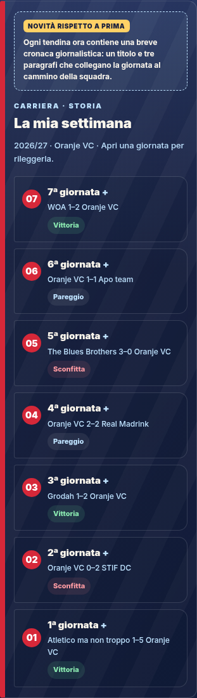
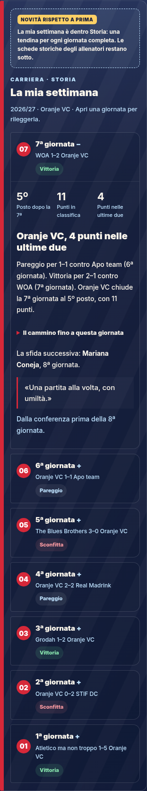
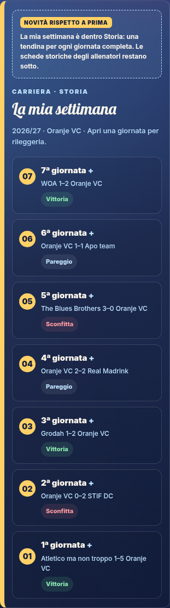
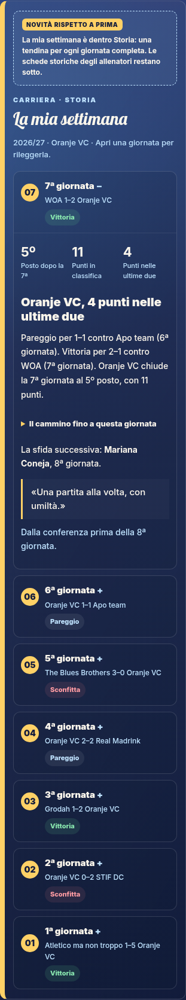
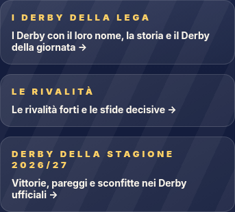
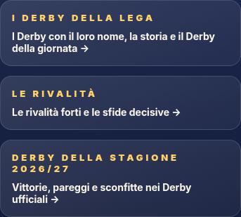

La giornata vista dalla Curva.
La stagione vista da te.
Le pagine attuali di O Girrr, con tre aggiunte da valutare: il premio alla squadra della giornata, i Re dei Derby e La mia settimana. I link aprono direttamente ogni proposta. L’evidenza temporanea «Novità rispetto a prima» spiega esattamente cosa cambia. Il comando «Prima / Con proposte» resta disponibile.
Risultati reali fino alla 7ª giornata. Preferenze di redazione e personaggi dimostrative; nessuna votazione degli allenatori. Nessun invio, pubblicazione o modifica al database.
I percorsi che cambiano
Un invito tra le notifiche
Dopo la giornata completa, una notifica cliccabile per intero apre il voto nella Curva. Tolti il riepilogo personale aggiunto e il link Home ai Re dei Derby.
Vedi la notifica MVP ›Il club MVP della giornata
Tre candidature motivate, scelta già conclusa della redazione e del pubblico rappresentato dai personaggi della Curva. Nessun voto degli allenatori: il verdetto precede il Giornale.
Vedi il verdetto ›Derby della stagione 2026/27 ›
Pagina dedicata, ordinata per Derby vinti: vittorie, pareggi, sconfitte e partite giocate. Nessun simulatore. Include i Derby del registro ufficiale, anche The Continental e il Derby dell’Emma dell’Oranje.
Controlla la classifica ›La mia settimana ▾
Una breve cronaca giornalistica per giornata: sette titoli e sette capitoli, con un filo di stagione e fatti verificati. Ultima giornata aperta, precedenti chiuse. Il racconto resta nella Carriera: niente altro riepilogo nella Home. Il selettore esterno serve solo per confrontare le squadre nella prova.
Leggi l’Oranje ›Il verdetto della Curva
Anteprima dell’articolo dopo la chiusura. Segue il verdetto della giuria e riporta alla votazione esatta. Nessun articolo viene pubblicato.
Vedi l’articolo ›Il premio resta nella stagione
Premio separato dagli altri record nella scheda Record. Una tendina stagionale raccoglie le giornate. Le giornate precedenti non ricevono vincitori inventati.
Apri l’archivio ›La mia settimana: aperta e chiusa
Fotografie del componente reale dentro Carriera → Storia. Apri le immagini per ingrandirle.










Le voci del menu Derby
La voce stagionale usa la stessa grafica delle altre. L’Oranje è compreso nel registro ufficiale.




Confronti reali nel browser
Per ogni percorso: prima e con le proposte evidenziate, nella grafica Lega e Stadio, a 390 e 1280 px. Apri una foto per vederla intera.
Prima di trasformarla in una funzione reale
Da approvare: candidatura del club (non del singolo giocatore), composizione della giuria, peso dei voti e momento di chiusura. Poi servono identità verificata, voto unico sul server, archivio immutabile e storico dei Derby accettati/vietati. Questa prova non attiva queste funzioni.